この演習問題で使用したデータの出典は次のとおりです。
- 総務省統計局 家計調査（家計収支編） 時系列データ（二人以上の世帯）
- 気象庁 過去の気象データ・ダウンロード
この演習問題で使用したデータの出典は次のとおりです。
表１は１世帯あたりのアイスクリーム・シャーベットとエアコンへの支出金額を月ごとに調べたデータである。次の各問いに答えよ。
表１
| 月 | アイスクリーム・シャーベット(円) | エアコン(円) |
|---|---|---|
| 2015-01 | 401 | 344 |
| 2015-02 | 345 | 656 |
| 2015-03 | 480 | 480 |
| 2015-04 | 590 | 183 |
| 2023-09 | 1234 | 1429 |
| 2023-10 | 823 | 495 |
アイスクリーム・シャーベット と エアコン への月ごとの支出金額の推移を折れ線グラフで示せ。
❶ 表１の列のタイトルから表の末尾まで選択した状態で、メニューバーの❷ 挿入 ＞ ❸ グラフを選択。
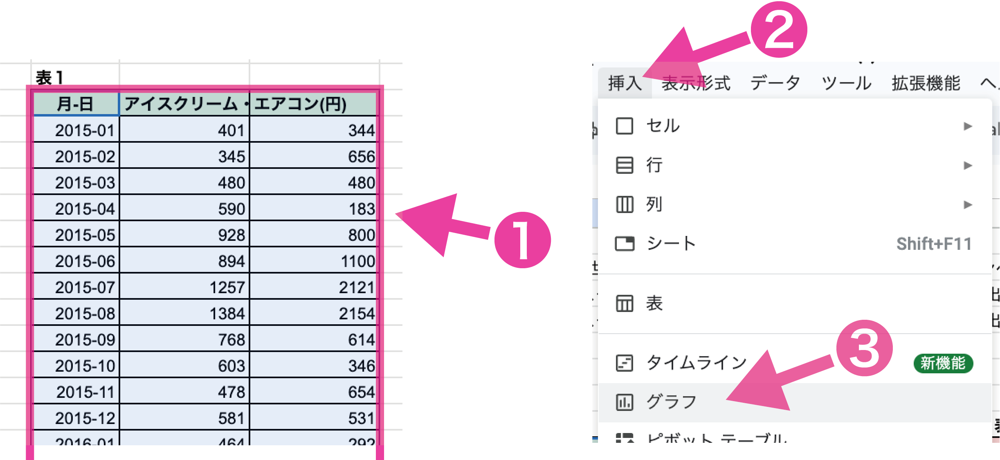
グラフエディタの❹ 設定 ＞ ❺ グラフの種類 ＞ ❻ 折れ線を選択。
❼ 行を見出しとして使用にチェックを入れると、系列名を表示できる。
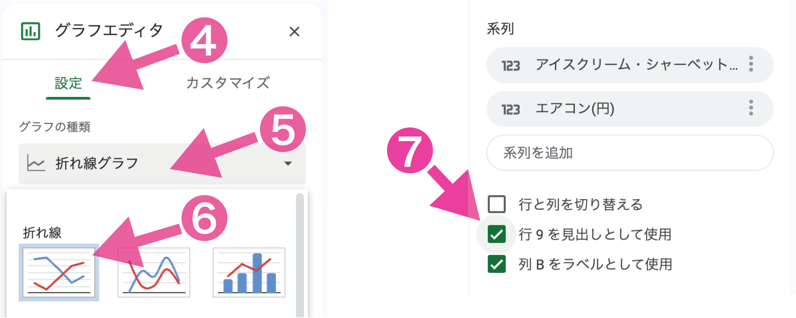
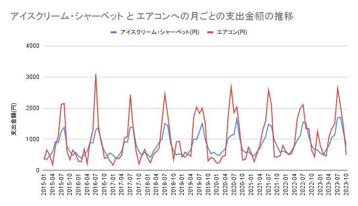
アイスクリーム・シャーベット と エアコン への月ごとの支出金額の関係を散布図で示し、回帰直線(トレンドライン)およびその方程式を示せ。また、表２の青背景のセルに相関係数を求めよ。
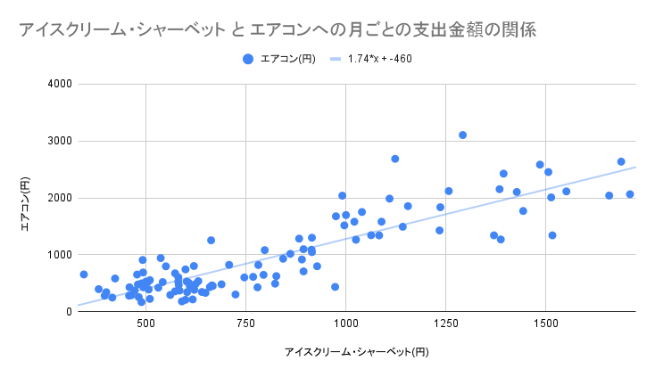
表１は東京の気象データ と １世帯あたりの アイスクリーム・シャーベット および エアコン への支出金額を月ごとに調べたデータである。次の各問いに答えよ。
| 月 | 東京の気象データ | 家計支出(円) | ||
|---|---|---|---|---|
| 平均気温(℃) | 平均湿度(％) | アイスクリーム・シャーベット | エアコン | |
| 2015-01 | 5.8 | 52 | 401 | 344 |
| 2015-02 | 5.7 | 59 | 345 | 656 |
| 2015-03 | 10.3 | 57 | 480 | 480 |
| 2015-04 | 14.5 | 71 | 590 | 183 |
| 2023-09 | 26.7 | 80 | 1234 | 1429 |
| 2023-10 | 18.9 | 67 | 823 | 495 |
平均気温(℃) と アイスクリーム・シャーベット および エアコン への月ごとの支出金額の推移を折れ線グラフで示せ。
❶ 表１の列のタイトル（小項目）から表の末尾まで選択した状態で、メニューバーの❷ 挿入 ＞ ❸ グラフを選択。
グラフエディタの❷ 設定 ＞ ❸ 平均湿度(%)の「︙」をクリックし、❹ 削除をクリックし、平均湿度の系列を削除する。
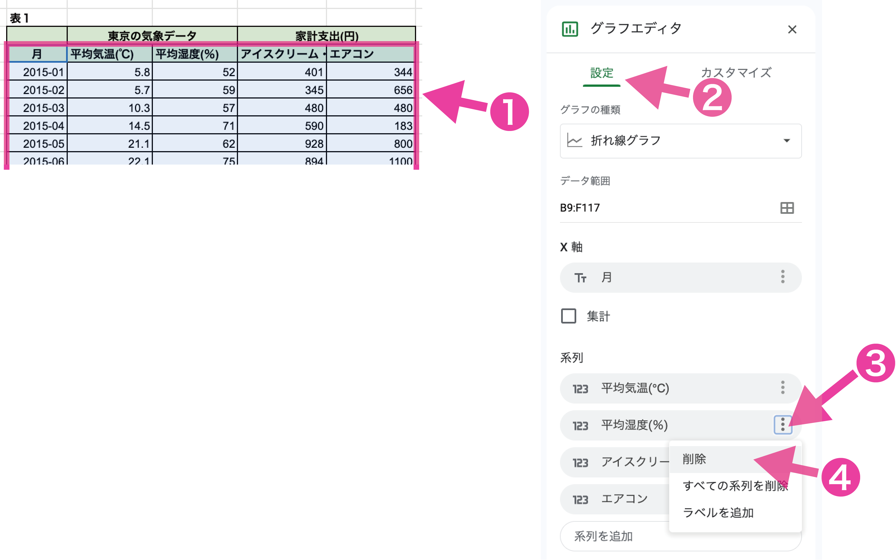
グラフエディタの❺ カスタマイズ ＞ ❻ グラフと軸のタイトル ＞ ❻ タイトルテキストを編集（「平均湿度(%)、」を削除）。
❽ カスタマイズ ＞ ❾ 系列で平均気温(℃)を選択し、❿ 軸で右軸を選択。
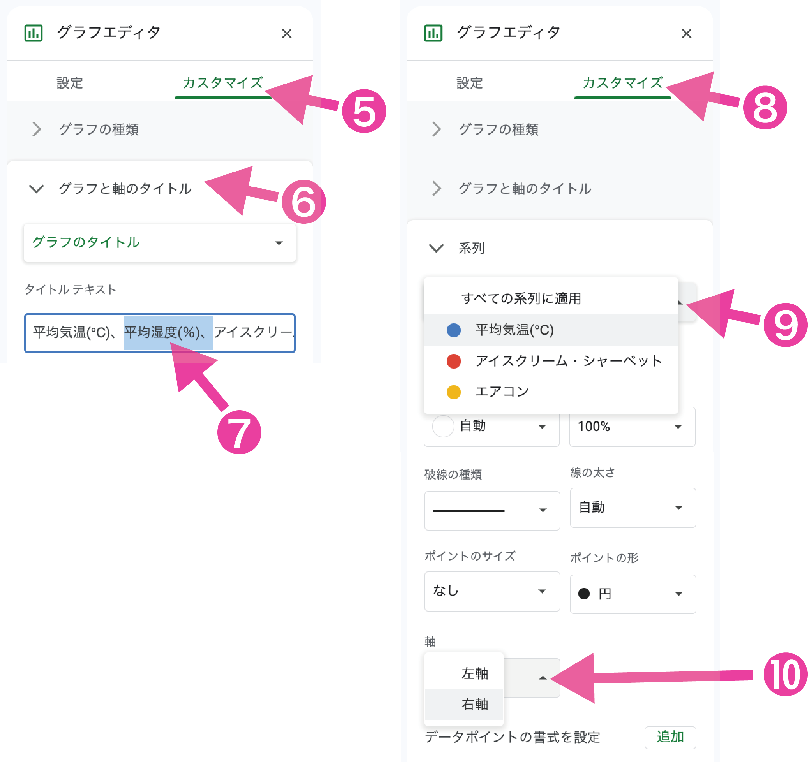
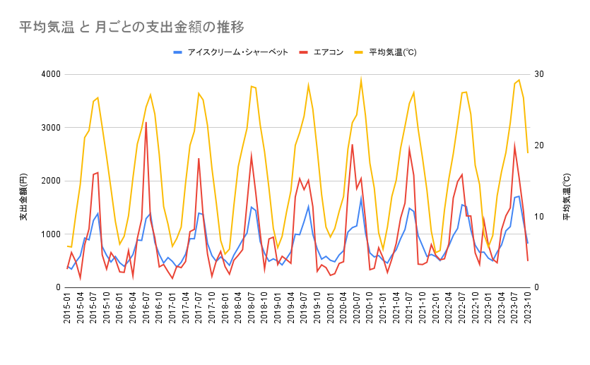
(1) 解答例
平均気温(℃) と アイスクリーム・シャーベット と エアコン への月ごとの支出金額の関係を散布図で示し、回帰直線(トレンドライン)およびその方程式を示せ。
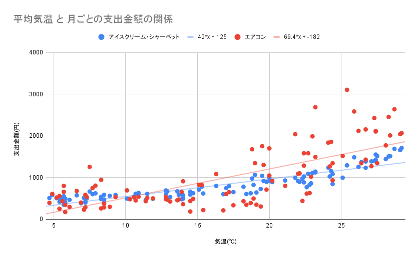
(2) 解答例
平均湿度(%) と アイスクリーム・シャーベット と エアコン への月ごとの支出金額の関係を散布図で示し、回帰直線(トレンドライン)およびその方程式を示せ。
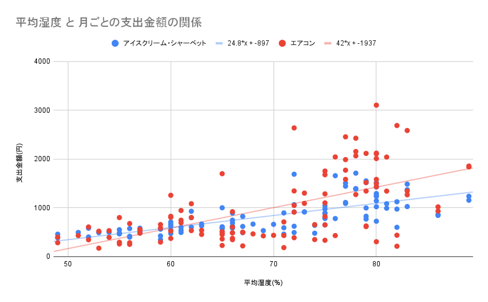
(3) 解答例
表２の青背景のセルに相関係数を求めよ。
(4) 解答例
相関係数
アイスクリーム・シャーベット
エアコン
平均気温(℃)
0.903
0.745
平均湿度(%)
0.720
0.608
アイスクリーム・シャーベット と エアコン への月ごとの支出金額の関係は、どのような因果関係があると考えられるか。
アイスクリーム・シャーベット と エアコン への月ごとの支出金額のあいだには強い正の相関関係はありますが、直接的な因果関係があるとは考えにくいことがわかると思います。(2)〜(4)の結果からもわかるとおり、両者には気温という共通する要素から影響を受けていることがわかります。 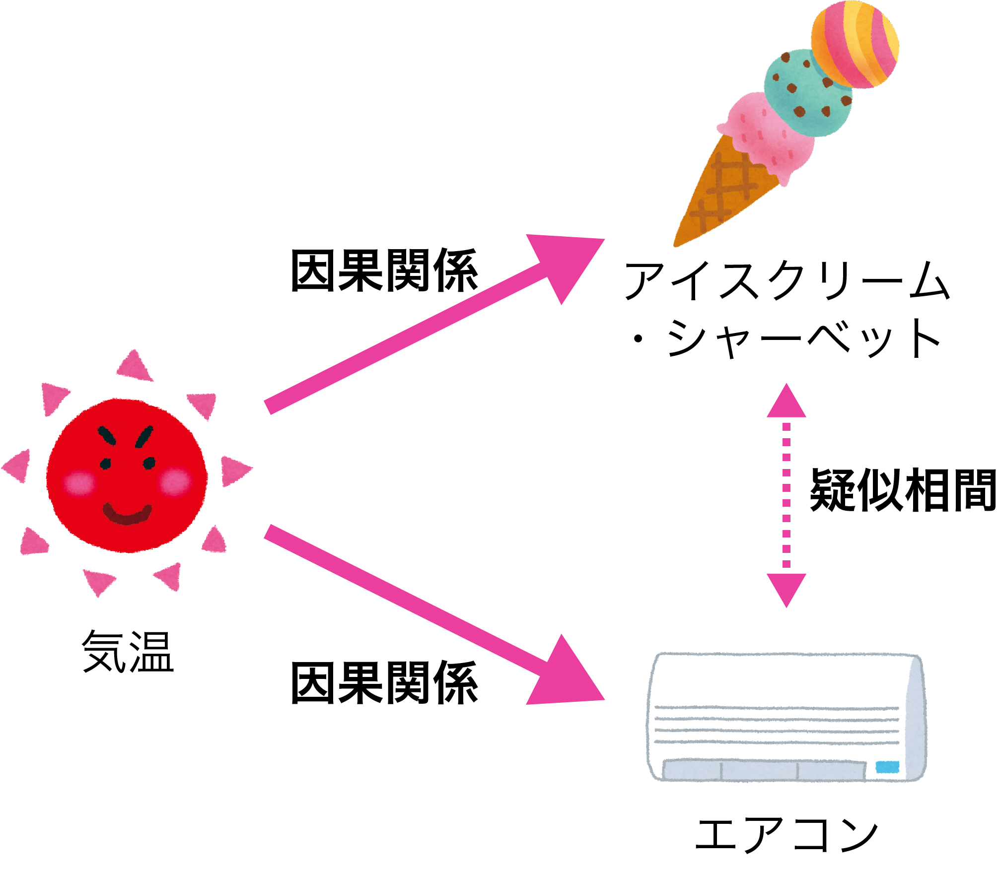
(5) 解答例
表１は東京の気象データ と １世帯あたりの支出金額（スナック菓子，アイスクリーム・シャーベット，ココア・ココア飲料，エアコン）を月ごとに調べたデータである。次の各問いに答えよ。
平均気温と各項目の支出金額の散布図を作成し、回帰直線およびその方程式を求めよ。
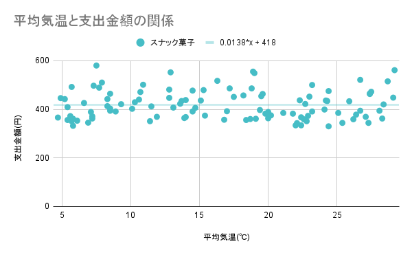 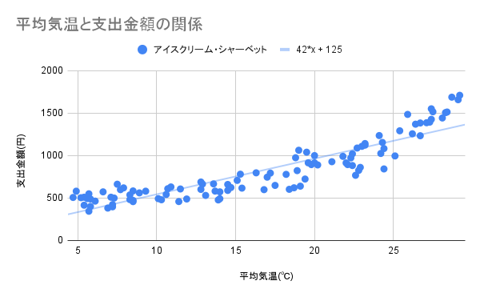 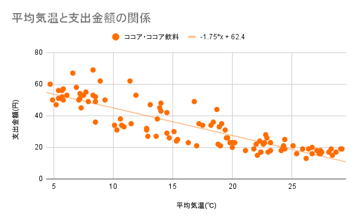 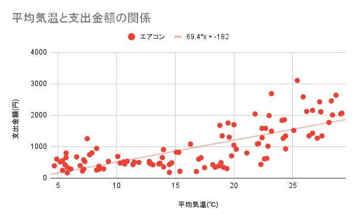
(1) 解答例
スナック菓子
アイスクリーム・シャーベット
ココア・ココア飲料
エアコン
表２に相関係数を求めよ。
(2) 解答例
相関係数
スナック菓子
アイスクリーム・シャーベット
ココア・ココア飲料
エアコン
平均気温(℃)
0.002
0.903
-0.877
0.745
平均湿度(%)
-0.022
0.720
-0.735
0.608
平均気温と 強い正の相関があるもの，強い負の相関があるもの，相関関係がないものはどれか。
強い正の相関があるもの：「アイスクリーム・シャーベット」および「エアコン」 強い負の相関があるもの：「ココア・ココア飲料」 相関関係がないもの：「スナック菓子」
(3) 解答例